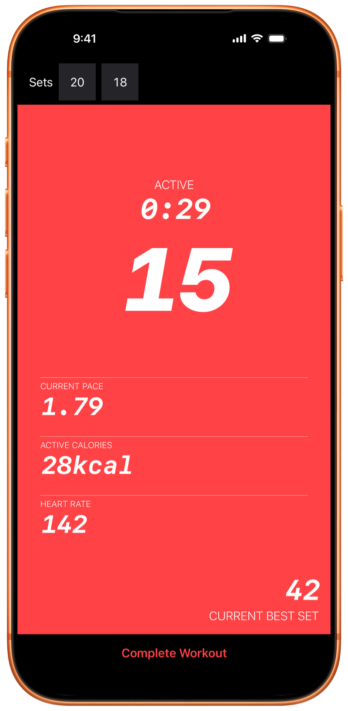
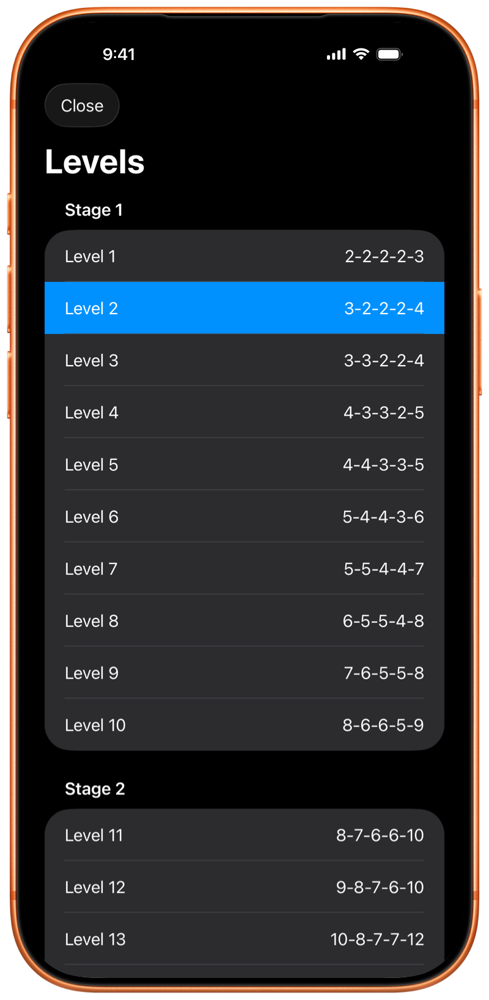
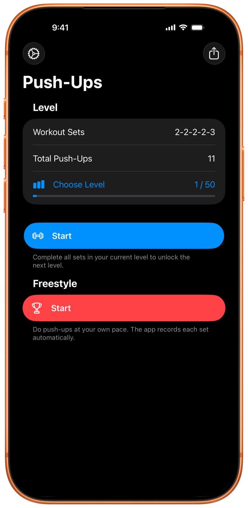

Amazing app
“I really like this app. Its simplicity is what makes it the best!”
Push-up training for iPhone, iPad, and Apple Watch
Follow the program or train freely. Pushanova counts your push-ups on iPhone, iPad, and Apple Watch.

Free to start. No account. No ads.

The program has 50 levels. Start at any level, or train freely and choose your own sets. You can also record push-up sets during HIIT or strength training.
Pushanova does not require a daily or weekly schedule. You can repeat a level and take rest days, with no penalty for a break.

Place your iPhone or iPad on the floor, or start the workout on Apple Watch. A short countdown gives you time to get into position.
Pushanova counts your push-ups automatically and records your sets, pace, workout time, and active calories. Heart rate is included when available. On iPhone and iPad, automatic counting does not take photos or record video.
You control how long you rest. During a program workout, Pushanova suggests 90 seconds of rest between planned sets. You can continue earlier or rest longer.
You can start and complete a workout on Apple Watch without your iPhone nearby. When you use Apple Watch and iPhone together, Apple Watch tracks your push-ups while iPhone displays the synchronized workout.
Pushanova saves every completed workout, including sets, pace, duration, calories, and heart rate1 when available. Your history shows how training changes over time. With your permission, completed workouts can also be saved to Apple Health.

“I really like this app. Its simplicity is what makes it the best!”
“It is great. It helps me do more push-ups, and it motivates me to keep improving.”
“I can do so many push-ups now! Written by our 13-year-old son, who has been very motivated by this app.”
“I love this app. I recently decided to see how fast I could get to 100 push-ups. I could not find an app that made this easy at an affordable price until I found this one. I love how clean the app is. The developer is also very responsive to feedback.”
App Store reviews have been lightly edited for length and clarity.
Push-up tracking on iPhone and iPad does not take photos or record, save, or upload video. Pushanova does not use the camera to identify you.
Pushanova does not require an account, does not sell your data, and does not contain ads. Workout data stays on your devices and in your personal iCloud account when synchronization is on. With your permission, completed workouts can be saved to Apple Health.
An active workout can be restored if Pushanova closes or is interrupted.
No. Pushanova can track push-ups with an iPhone or iPad. Apple Watch adds wrist-based tracking and supports elevated push-ups on benches and horizontal bars.
Yes. You can start and complete a workout on Apple Watch while your iPhone is not nearby. The Watch app focuses on workouts. Workout history and analytics are available on iPhone and iPad.
When you use Apple Watch and iPhone together, Apple Watch can track your push-ups while iPhone displays the synchronized workout.
On iPhone and iPad, the front camera measures changes in the distance between your face and the device. On Apple Watch, Pushanova analyzes the movement of your wrist. You can also enable a setting that counts one push-up each time you tap the screen.
Yes. On iPhone, Pushanova can use another on-device sensor when camera access is unavailable. On both iPhone and iPad, you can enable counting by tapping the screen. Apple Watch does not use a camera.
No. Automatic counting does not take photos or record, save, or upload video. The camera only measures distance, and Pushanova does not use it to identify you.
iPhone and iPad support standard floor push-ups and push-ups from your knees. Apple Watch also supports elevated push-ups on a bench or horizontal bar.
Push-ups on parallel handles with your palms facing each other are not supported. Knuckle push-ups may work, but counting can be less accurate.
No automatic tracking method can count every movement correctly. Device position, form, and speed can affect the result. After a workout, you can correct the number of push-ups in each existing set.
You can begin with the early levels, which contain small sets. Push-ups from your knees are supported. You can repeat a level and progress at your own pace.
Yes. You can start at any level or train freely. Pushanova can record push-up sets between HIIT rounds or strength-training exercises.
The program has 50 levels in three stages. Each level is a structured workout with preset sets and push-up targets. The final level is one set of 100 push-ups.
You can start at any level, repeat a level, or skip to another level. The first 10 levels are free. Pushanova Premium unlocks levels 11–50.
Yes. You can complete a level in one workout and train freely in another. You can also continue training freely after you complete a level in the same workout.
Yes. Pushanova does not require a daily or weekly schedule. You can repeat levels, take rest days, and return to the program when you are ready.
During a level workout, Pushanova suggests 90 seconds of rest between planned sets. You can continue earlier or rest longer. When you train freely, there is no fixed rest target.
You cannot build and save a preset sequence of sets before a workout. When you train freely, you decide how many push-ups and sets to perform while you train, and Pushanova records the workout.
Yes. With your permission, Pushanova saves completed strength-training workouts to Apple Health, including duration, active calories, and heart rate when available. Push-up and set counts are not saved to Apple Health.
Apple Health permission is required for workouts on Apple Watch. It is optional on iPhone and iPad.
Yes. Pushanova estimates active calories even when no heart-rate device is available. Heart rate can come from Apple Watch, compatible heart-rate earbuds, or a Bluetooth heart-rate monitor.
Heart-rate sensing with compatible earbuds requires iOS 26 or later on iPhone, or iPadOS 26 or later on iPad.
Yes. Pushanova is a full iPad app with automatic counting, the 100 push-up program, the option to train freely, workout history, progress, analytics, and Apple Health.
Yes. You can start and save a workout without an internet connection. iCloud synchronization resumes when your device is online again. App Store purchases require an internet connection.
No. Pushanova does not require an account or membership. You can use the app without providing an email address or creating a password. Pushanova Premium is optional and is purchased through the App Store.
Yes. Free training includes unlimited workouts without preset targets, the first 10 levels, and automatic counting on iPhone, iPad, and Apple Watch. Pushanova does not contain ads.
Eligible new subscribers can try the yearly subscription free for three days. It begins automatically unless you cancel before the trial ends. The lifetime purchase has no trial, and the App Store shows the price before you buy.
You can train freely for as long as you want. The first 10 levels and automatic counting are also free. Start a workout on iPhone, iPad, or Apple Watch.

No account. No subscription required. No ads.
